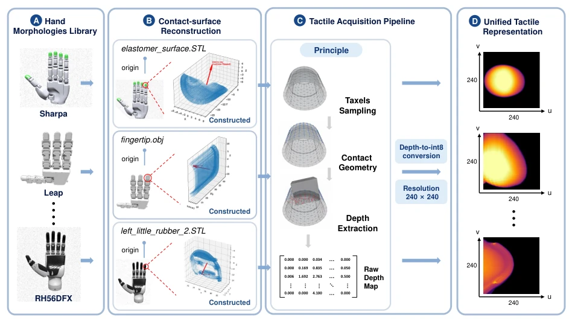
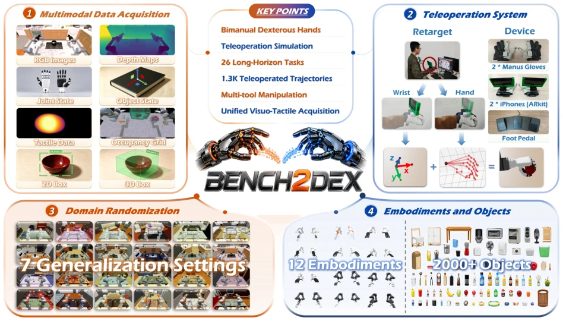

Bench2Dex attempts to unify multi-hand dexterous manipulation using simulation, an ambition commendable given that real-robot tactile hardware remains unstandardized. However, "simulated tactile" is ultimately a paper tiger; substituting geometric projection for real sensors, while resolving cross-hand alignment, sacrifices physical fidelity. The evaluation metrics are granular, and the Invariance/Equivariance axis is insightful; unfortunately, baseline models collectively collapse under disturbance, suggesting that current strategy generalization capabilities are concerning. Open-sourcing is positive, but do not expect simulation results to directly deploy on real robots, as the illusion that "simulation is reality" needs to be dispelled.
Dexterous manipulation is the core of embodied intelligence, but existing benchmarks are mostly limited to single manipulators or grippers [4, 13]. Although DexMimicGen [33] and others cover multiple hand types, they lack tactile support; RoboMIND 2.0 [41] has tactile support but uses parallel grippers, unable to adapt to heterogeneous dexterous hands [31, 41]. Tactile signals depend on fingertip shape, making cross-hand transfer difficult, leading to algorithms struggling to verify if they truly utilize contact information rather than overfitting specific layouts. The lack of a unified simulation environment hinders fair comparison and generalization research of visuo-tactile learning across embodied systems.
The overall workflow is based on Isaac Lab, including online teleoperation and offline replay. Teleoperation uses Manus gloves + ARKit to uniformly control 12 hand types, with actions remapped to target joints. The key innovation lies in the unified tactile interface: reconstructing contact surface meshes for each hand type, encoding local contact depth into 240x240 images via surface-aligned ray-casting, masking hardware differences. Data replay generates 8-modal synchronized data (RGB-D, tactile, proprioception, etc.). Evaluation introduces Stable Success Rate (SR) and Locking Stage Completion Rate (LSCR), and divides disturbances into Invariance and Equivariance axes, distinguishing task-irrelevant interference from geometric changes, avoiding single scores masking generalization details.

Figure 2. Unified surface-aligned tactile acquisition for diverse robotic hands. Contact surfaces are reconstructed for twelve robot-hand morphologies, and a shared surface-aligned ray-casting pipeline maps the heterogeneous hand geometries into a common image-like tactile representation.
实验Experiments
数据集含 26 任务、12 具身、1.3K 演示。评测 ACT、DP、π0.5、GR00T N1.5。匹配场景下 GR00T 胜率 48.5% 领跑，但 Full 扰动下降至 19.8%，所有模型泛化均显著下降。LSCR 指标揭示部分模型虽失败但完成了依赖阶段（如拼图），弥补了 SR 的不足。扰动分析显示，GR00T 对几何变化适应较好，而 ACT/DP 对不变性干扰更敏感。结果证明当前策略严重依赖训练分布，跨手型与场景泛化仍是巨大挑战。
The dataset contains 26 tasks, 12 embodiments, 1.3K demonstrations. Evaluates ACT, DP, π0.5, GR00T N1.5. In matched scenarios, GR00T leads with a win rate of 48.5%, but drops to 19.8% under Full disturbance, with all models showing significant decline in generalization. The LSCR metric reveals that some models, though failing, completed dependency stages (e.g., puzzle), compensating for the insufficiency of SR. Disturbance analysis shows GR00T adapts better to geometric changes, while ACT/DP are more sensitive to invariance disturbances. Results prove current strategies rely heavily on training distribution, and cross-hand and scenario generalization remain major challenges.

Figure 1. Overview of Bench2Dex. Bench2Dex is a simulation benchmark for bimanual dexterous manipulation with 26 tasks, 12 robot embodiments, and about 1.3K human-teleoperated demonstration trajectories, collected across a range of objects and scenes. It supports teleoperated demonstration collection and 8 data modalities: RGB images, depth maps, joint states, object states, a shared visuo-tactile representation, 2D/3D bounding boxes, and occupancy grids. With this multimodal data and controlled domain randomization, Bench2Dex supports evaluation of policy performance, robustness, and generalization on everyday bimanual manipulation tasks.